충남대학교 컴퓨터공학과 김현수 교수님의 "소프트웨어 공학" 강의를 필기한 내용입니다.
다소 잘못된 내용과 구어적 표현 이 포함되어 있을 수 있습니다.
Design Pattern
- 말 그대로 자주 접하게 되는 디자인(설계)상의 문제점을 해결하기 위한 일정한 패턴
- 전문가의 노하우가 들어있기 때문에 내가 만드려고 하는 시스템에 적용시키면 좋은 디자인 패턴이 있을 경우 적용하면 Side effect가 적고 여러 문제점을 사전에 방지하는 좋은 설계를 할 수 있게 된다
Basic Pattern
- 디자인 패턴과 무관하게 어떤 것을 설계하든 적용시키면 좋은 기본적인 패턴들
- 일단 알아두어야 할 점은 여기서 소개하는 대부분의 패턴들이 실제 구현으로 객체지향에서의 extend와 implement개념을 사용하는데 그렇다고 해서 이 패턴들이 다 똑같은데 그냥 이론충들이 나눠놓은게 아니란 거다
- 이론적으로는 구분된 개념이지만 그것들을 extend와 implement를 이용해 코드로 짤 수 있다는 것
Abstract-Occurrence(개념 실체) Pattern
- Abstract(개념) : 일반적이고 추상적이고 공통적인 것
- Occurrence(실체) : 구체적이고 특수한 것
- 이렇게 말하면 뭔소린지 모르겠는데 사실 너가 지금까지 많이 해오던 패턴이다
- 클래스 설계할때 공통된 내용들을 하나의 클래스에 몰아넣고 그 클래스를 상속해서 각각의 클래스를 설계하면 그 공통된걸 담고있는 클래스가 Abstract(개념) 이 되는거고 그걸 상속하는 각각의 클래스가 Occurrnce(실체) 가 되는 것이다
- 뭐 당연히 중복된 정보를 저장하지 않기 위해 사용함
Player Role Pattern
- 말그대로 어떤 객체가 다양한 역할을 맡을 수 있는 경우에의 패턴임
- 일단 역할을 가질 수 있는 객체에 대한 클래스를 만들고, 역할들에 대한 클래스를 만든 뒤 역할들을 묶어줄 하나의 슈퍼클래스를 만들어 객체에 대한 클래스가 그 슈퍼클래스를 사용하는 방식으로 구현하게 됨
- 글로 보는것보다 그림으로 보는게 더 이해 잘될거임
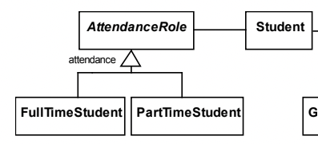
- 이런식인거다 이말이야
- 학생은 FullTimeStudent, PartTimeStudent의 역할을 맡을 수 있을 때 이 역할의 구분을 Student클래스에 넣기보다는 역할들에 대한 클래스를 만든 뒤 AttendanceRole로 일반화하고, Student클래스가 AttendanceRole을 필드로 가지게 하는 것
Delegation Pattern
- 이건 모든 기능을 전부 제공하는 포괄적인 클래스를 하나 만들고, 그 기능의 일부만 사용하는 클래스의 경우 포괄클래스를 상속하는게 아닌 포괄클래스가 제공하는 기능을 참조하기만 해서 단순히 포괄클래스에게 일을 맡기고 결과를 받아다가 전달해주는 역할
- 니가 가장 와닿을 대표적인 예시가 C++에서의 Adapter Container 이다
- C++에서 양방향 pop과 push에 특화된 컨테이너인 Deque를 만든 뒤 Stack과 Queue같은 Adapter Container는 Deque에서 제공하는 기능을 사용하기만 해서 Deque의 기능 중 특정한 작업만 할 수 있도록 유도하는 식으로 구현이 되어있는데 이게 이 Delegate Pattern의 대표적인 예시임
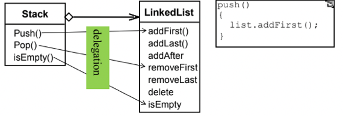
- 이런 Delegation Pattern 는 일단 모든걸 제공하는 클래스를 만든뒤 그걸 사용하기만 하는 클래스를 만들면 되니까 얘도 중복된 코드가 작성되는 것을 막을 수 있고 상속이 아닌 사용을 하는 이유는 그 모든 기능을 전부 필요로 하는게 아니기 때문임
- 약간 Abstract-Occurrence Pattern과는 반대방향으로 흘러간다고 생각하면 된다 - Abstract-Occurrence Pattern의 경우에는 작은 클래스를 만들고 그걸 확장하는 방식이라면 얘는 커다란 클래스를 만들고 그중 일부만 가져오는 방식인 것
Hierarchy Pattern
- 뭐 이건 걍 회사의 조직도처럼 계층, 트리의 구조가 필요할때 사용하게 되는 패턴이다
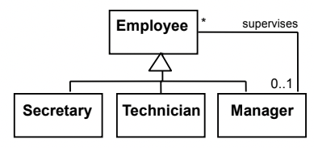
- 맨날 나오는 예시임
Generate Pattern(생성 패턴)
- 이건 클래스를 가지고 객체를 어떻게 생성할것이냐에 대한 것임
Factory Pattern
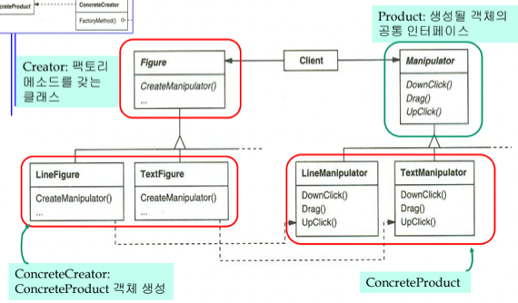
- 따마라 Time-to-Live에서 본것처럼
- BaseClass가 있고 그걸 상속받는 ExtensionClass가 있을때 어느시점에 어떤 자식객체가 생성되는지 예측할 수 없는 경우(뭐 사용자 입력에 따라 달라진다던지)에 Factory Pattern을 사용한다
- 그래서 다양한 상황에 대응하여 그에 맞는 객체를 반환하는 ClassFactory 클래스를 정의하여 사용하게 된다
- 따마라 Time-to-Live에서 js/CalendarFactory.js코드 보면 대략 감올듯
Abstract Factory Pattern
- 얘는 Factory Pattern과 유사하게 객체를 만드는 클래스를 따로 정의하지만 Factory Patter과는 다르게 한번에 하나의 객체를 생성하는게 아니라 여러개를 생성하게 된다
- 그래서 특정한 클래스 하나를 요청하는 것이 아닌 어떤 클래스와 그것과 연관된 클래스의 객체들을 요청하여 클래스 그룹을 받게 되는 것
Prototype Pattern
- 자바스크립트 시간에 배웠쥬? 객체를 생성하는게 아니라 기존 객체를 복사해서 주는 방식
- 객체들이 대부분 비슷하고 조금씩 다를 경우에는 객체 하나를 처음부터 만드는게 아니라 복사해서 주는게 더 효율적이기 때문에 이러한 접근을 한댄다
Singleton Pattern
- 어떤 클래스가 시스템 전반에 걸쳐 단 하나의 객체만이 생성되어야 하는 경우 객체 생성 갯수를 하나로 제한하기 위해 Singleton Pattern 을 쓴다
- 그래서 생성자를 private으로 만들어 외부에서는 이놈을 생성하지 못하게 함 - JS같은 경우에는 익명함수를 선언하고 선언이 끝나자마자 호출되는식으로 단 하나의 객체만이 생성되게 한다
Structure Pattern
- 이건 객체들을 엮어서 더 큰 구조의 객체 그룹을 만들고자 할 때 어떻게 이 목표를 달성할 수 있을까에 대한 것이다
- 이건 런타임에 객체 그 자체나 객체들간의 구조를 바꾸려고 할 때 더 큰 유연성과 확장성을 갖게 하기 위함이다
Composite Pattern
- 얘는 트리 혹은 Nested구조를 표현하기에 적합한 패턴이다
- 기본 클래스와 이를 포함하는 컨테이너 클래스를 재귀적으로 표현한다고 돼있는데 예시 보고 나면 뭔말인지 쏙이해될거임
- 일단 대표적인 예시는 디렉토리인데
- 디렉토리의 구조를 보면 디렉토리 안에 또 다른 디렉토리들이 있을 수 있고 아니면 파일들이 있을 수 있자네
- 그럼 이 예시에서는 기본 클래스는 파일 인거고 이것을 포함하는 컨테이너 클래스는 디렉토리 가 되는 것
- 그리고 디렉토리는 다른 디렉토리 안에 재귀적으로 들어갈 수 있으므로 위에서 말한 컨테이너 클래스가 재귀적으로 표현된다는 말도 이것으로 이해할 수 있는 것
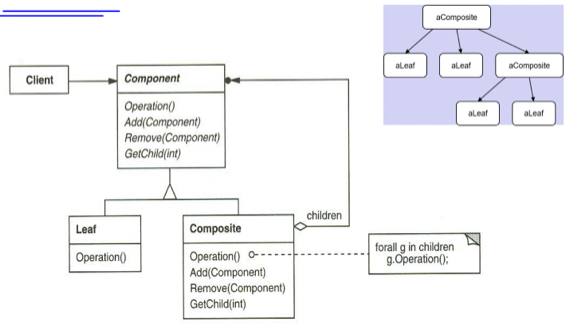
- 이 예시에서도 마찬가지로 볼 수 있듯이 Composite Class의 자식으로 또 다른 Composite Class가 있을 수 있고 다른 Leaf Classe들도 존재할 수 있게 되는 구조
- 이러한 구조는 집합 내에 속하는 객체와 집합 그 자체가 모두 동일한 메소드와 데이터를 가질 수 있게 해주고
- 객체 집합을 삽입하거나 삭제하기가 용이하며
- 특정 객체 집단에 명령을 전달하면 해당 객체 집단 내의 모든 객체가 재귀적으로 명령을 수행하게 할 수 있다
Decorator Pattern
- Decorator Pattern은 Wrapper Class라고 생각하면 된다 - 기존 객체를 Wrapping하여 새로운 기능을 가지게 하기 위한 것
- 나문희불여일견이라고 예시를 바로 보면 딱이해됨
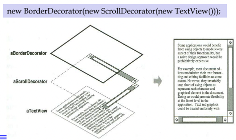
- Decorating할때는 Target을 Decorator의 인자로 주어 새로운 객체를 생성하게 하는 식으로 구현된다
- 그래서 TextView라는걸 먼저 만든 후, 여기에 Scroll을 포함시키기 위해 ScrollDecorator로 Decorate한 후 또 여기다가 테두리를 만들어주기 위해 BorderDecorator로 Decorate하는 식으로 진행될 수 있는 것
Adapter Pattern
- 이건 어떤 기능의 인터페이스를 바꿔서 제공하기 위해 사용하는 것이라 생각하면 되는데
- 위에서 Delegate Pattern에서 예시로 든 C++의 Adapter Container에서 Adapter가 이뜻인 것을 생각 하면 이해될거임
- 이것도 Delegate를 이용하기 때문인건데 외부 라이브러리 등에서 제공하는 기능의 인터페이스를 내가 수정해서 사용하거나 제공하려할때 내 버전의 인터페이스와 클래스를 만든 후 실제 동작은 저놈한테 Delegate하는 방식을 말하는 것
- 이때 내가 만든걸 Adapter라고 하고 내가 위임해서 사용하는 저놈을 Adaptee라고 한다
- 즉, 기존에 존재하거나 아니면 외부 라이브러리 등을 사용하려고 할때 원하는 인터페이스와 맞지 않을때 적용하게 된다
Facade Pattern
- 얘는 객체지향에서 말하는 정보은닉과 관련지을 수 있는데
- 클라이언트한테 기능을 제공할때 클래스를 제공하는게 아니라 해당 클래스의 인터페이스를 만들어서 그 인터페이스를 제공하는 식으로 외부 클라이언트에게는 복잡한 내부의 구현을 감추는 방식이다
- Facade의 뜻이 정문, 대문인 것을 떠올리면 생각하기 쉬움
Proxy Pattern
- 얘는 복잡하고 생성에 시간이 오래걸리는 객체의 경우에는 일단 경량화된 버전의 객체를 제공한 뒤 진짜 객체가 필요해지면 그때 생성하는 식으로 demand가 있을때까지 객체의 생성을 지연시키는 방식이다
- Proxy의 말뜻이 대리인인것처럼 일단 대리인을 내세워 특정 객체의 접근을 조절해 필요할때만 비싼 대가의 객체에 접근할 수 있게 하는 것
- Proxy는 원래 클래스랑 동일한 Interface를 갖게 된다
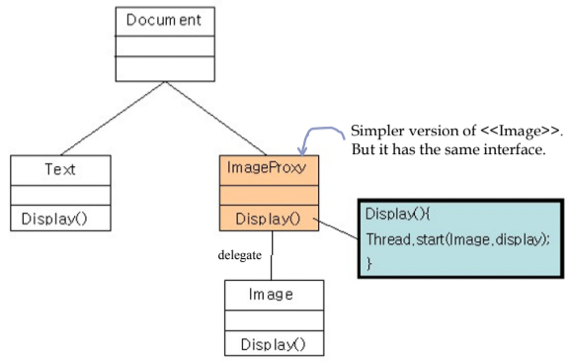
- 위 예시처럼 Proxy Pattern을 적용하여 이미지 로딩이 오래걸릴 때 일단 간단한 심벌을 보여주고 사용자가 원하면 그때 로딩을 시작하는 방식 으로 구현할 수 있다
Behavior Pattern
- 이건 클라이언트의 요청에 대해 객체들이 어떻게 반응해서 응답할것인지에 대한 패턴이다
- 즉, 객체들간의 상호작용이나 협력하는 방법에 대한 가이드라인인 것
Observer Pattern
- 웹 프레임워크 개발할때 경험 떠올려보면 데이터를 저장할 Store가 있고 그놈을 감시하는 클래스인 Channel을 만들어놓고 각 Component들이 Channel에 subscribe해놓으면 데이터가 변경됐을 때 publish를 통해 영향을 받을 수 있도록 설계한거 기억나나
- 그것처럼 데이터를 감시할 Observer클래스를 만들어놓고 정보의 변경을 알림받고싶은 클래스는 Observer클래스에 구독과 좋아요 알림설정까지 해놓으면 변경되었을때 Observer가 구독자들의 특정 메소드를 실행시켜주는 방식을 일컫는 거다
- 따라서 모든 구독하고있는 클래스들은 동일한 이름의 메소드를 갖고있어야 함 - 그래야 Observer에서 일괄적으로 메소드를 호출할 수 있기 때문
- 그래서 정보를 제공하는 객체의 변화가 이용 객체에게 전달되어야 할 경우 사용하고
- 관찰당하는 객체는 자기를 관찰하는 놈이 누구인지 몇놈인지 알 필요가 없어 의존성을 줄일 수 있댄다
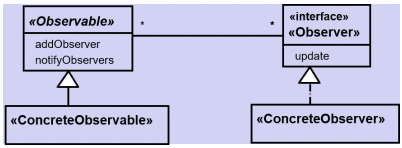
- 그래서 이를 구현할때는
- ConcreteObservable : 관찰당하는 바로 그놈
- Observable : 관찰당하는 놈들을 관리하는 상위클래스 - 이 클래스를 통해 구독하고 알림받을 수 있다
- ConcreteObserver : 관찰하는놈들
- Observer : 관찰하는놈들을 묶은 상위클래스 - ConcreteObserver는 이놈을 상속하기 때문에 변경이 감지되었을때 실행되는 메소드를 무조건 갖고있게 되고, Observable쪽에서도 메소드 이름이 통일되어있기 때문에 일괄처리가 가능해지는거다
Mediator Pattern
- 이건 객체들 간의 소통을 중재하는 객체를 하나 두어서 직접적인 접근을 막고, 설계자가 의도한 대로 소통할 수 있도록 하는 방법이다
- 중재자가 있기 때문에 객체간의 변화나 메세지를 조정할 수 있고
- 다른 객체를 직접적으로 참조할 수 없기 때문에 의존성을 줄일 수 있고 다른 객체의 존재를 모르거나 없는 상황에도 대처가 가능하다
- 그리고 소통을 전담하는 객체가 생겼기 때문에 소통의 변화가 필요할때는 특정 객체를 바꾸는게 아닌 이 객체를 변경하는 식으로 처리할 수 있다
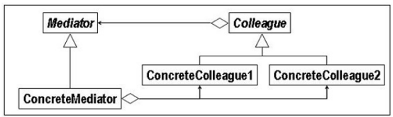
- 그래서 일반적으로 위처럼 구현할 수 있음
- Mediator는 객체들간의 소통에 필요한 인터페이스만 정의돼있는 놈
- ConcreteColleage는 그냥 각각의 객체이고
- Colleague는 그 각각의 객체를 일반화한 클래스인데
- 이놈이 Mediator를 갖고있기 때문에 이것을 상속받은 ConcreteColleague들은 이 Mediator를 통해서 다른놈과 소통할 수 있는 것이다
- ConcreteMediator는 그 각각의 객체간의 통신을 중재할 놈이 되는 것
- 근데 이놈은 각각의 Colleague들을 참조할 수 있기 때문에 메시지가 들어왔을 때 메시지의 목적지 객체로 전달해줄 수가 있는 것이다
- 수업에서는 2가지 구동 시나리오를 제시했는데
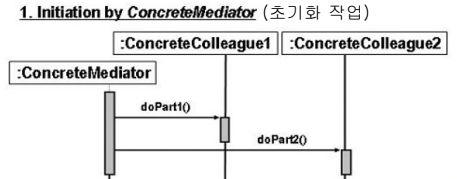
- 이건 중재자에 의해 각각의 Colleague들이 초기화되는 시나리오 를 보여준거고
- 당연히 중재가가 객체에게 메시지를 보내야하기 때문에 Mediate Interface가 아닌 ConcreteMediator가 나선 것
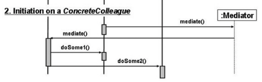
- 그리고 이건 Colleague하나가 중재자를 통해 자기자신과 다른놈에게 뭔가 시킬때의 시나리오 이다
- 이번에는 객체가 중재자에게 요청을 하기 때문에 ConcreteMediator가 아닌 Mediate Interface에게 보낸거다
Chain of Responsibility Pattern
- 이건 어떤 객체한테 요청할지 모를때 객체 그룹의 대장한테 보내고 LinkedList마냥 순서대로 그룹의 객체들을 쭉 돌면서 그걸 처리할 수 있는 객체를 찾는 방식이다
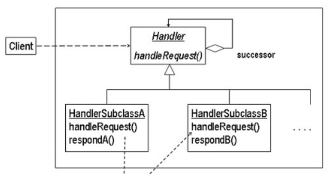
- 그래서 위 그림처럼 Handler superclass가 자기자신을 참조하는 방식으로 Handler들을 일렬로 쭉 Chaining되어있게 하고 Client는 head에게만 요청을 보내게 되는 것
- 이렇게 함으로 요청을 보내는 쪽은 요청을 처리하는 쪽의 객체를 하나만 알면 되기 때문에 요청객체와 처리객체의 의존성을 줄일 수 있다
Command Pattern
- 이건 어떤 작업을 할지를 메소드 이름이 아닌 클래스의 이름으로 구분하고 각 클래스는 동일한 인터페이스를 갖게 하여 클라이언트가 요청을 보낼때 객체를 지정해서 요청을 보내면 그에 맞는 동작이 이루어지게 하는 방식이다
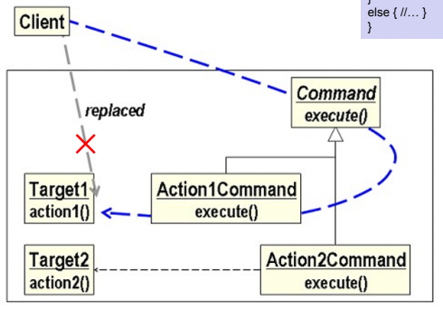
- 위 그림 예시로 좀 이해를 해보자고
- action1과 action2를 제공하고자 할때 클라이언트가 이걸 직접 접근하는게 아니고
- 공통된 Command Interface를 상속받는 Command Class들 중 특정한 놈을 골라서 요청을 보내는 방식
- 이렇게 함으로써 이전과 마찬가지로 요청과 처리 간의 의존관계를 낮출 수 있고
- 요청된 명령들의 히스토리를 저장해 rollback시에 요긴하게 사용할 수 있댄다
State Pattern
- 이것도 예전에 웹 프레임워크 개발할때 상태에 따라서만 화면이 다르게 랜더링되게 했던거 생각하면 되는데
- 프로그램의 상태에 따라 다르게 동작해야할 경우에 상태들을 객체화해놓고 상태에 따라 특정 메소드를 호출하게 하는 방식을 말한다
- 뭐 상태에 종속적인 행위를 명확하게 분리해서 유지보수가 용이히고
- 상태변화가 명확하게 드러나기 때문에 추적하기 좋댄다